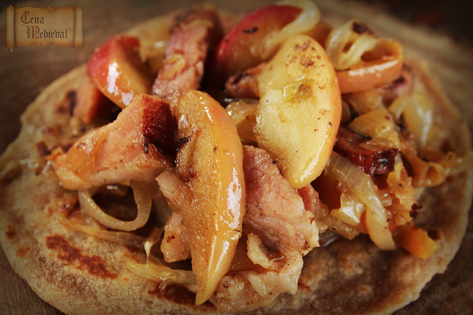

Apple Bacon

Description:
Apple bacon is a delicious treat that was supposedly eaten by Vikings years ago.
From the name of the recipe you can see why it is something the Vikings enjoyed,
and something we can still enjoy today! See the recipe below for some insight
on how to create this simple dish!
Ingredients:
- 400 g (1 lb) bacon, fresh or cured
- 1 tbsp butter, salted or unsalted
- 2 onions, sliced
- 2-3 apples, cored and sliced
- pepper
- a few whole cloves
Steps:
- Cut the bacon into slices and fry them in a large frying pan at medium heat.
- Turn them over a couple of times and fry until crisp
- Remove from pan, add butter and fry onion rings and apple slices with the spices
at low heat until they are soft and beginning to colour.
- Return the bacon to the pan, stir and let warm through.
- Serve with fresh baked bread. Click here for our Viking Bread recipe!
Home